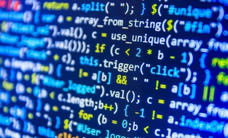

¿Quienes Somos?

Bautista Boix Mansilla y Agustín Saraví, son dos programadores que hacen paginas web para recomendar cosas a sus espectadores. Entre estas cosas recomendamos productos, películas, tecnología y más a nuestros seguidores. Somos principiantes pero tenemos pensado seguir con esto y lograr muchas cosas.
¿De donde somos?
Somos de Buenos Aires, Tigre.
Contactanos: Agustin Saravi Bautista Boix
¿Que nos gusta hacer?
A nosotros nos gusta hacer varias cosas, codificar es una de ellas. Los deportes también forman parte de nuestras vidas diarias como el fútbol y el hockey pero también vamos al gimnasio todas las semanas.

Cuando vemos películas o series de televisión, principalmente nos gustan las de acción pero aventura y drama o comedia también entran en nuestros gustos.